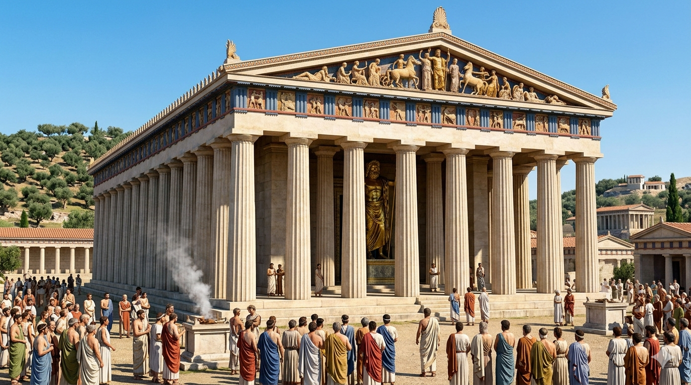

Jocurile Olimpice aveau o importanță deosebită în viața grecilor antici. Ele reprezentau nu doar o competiție sportivă, ci și o sărbătoare religioasă dedicată zeului Zeus, stăpânul Olimpului. Această dimensiune sacră transforma Olimpia într-un spațiu inviolabil, unde spiritualitatea se îmbina armonios cu autodepășirea fizică.
Instituția „Ekecheiria”, cunoscută sub numele de armistițiul sacru, era probabil cel mai impresionant aspect politic al jocurilor. Înainte de începerea competițiilor, soli numiți *spondophoroi* călătoreau în toate colțurile lumii elene pentru a proclama încetarea oricăror ostilități. Acest pact nu era doar o pauză în războaie, ci o garanție a protecției divine pentru toți pelerinii și atleții care traversau